LinxPOS
O Linx POS é um software especialmente desenvolvido para gerenciar e controlar as operações no ponto de venda. Oferece consultas e relatórios relativamente às vendas, fechamentos e controle de caixa, além de permitir a geração de informações que devem estar sempre disponíveis para eventuais fiscalizações.
Apresentando a tela de vendas do LinxPOS
Por meio desta tela são efetuadas todas as operações de venda, troca, emissão de cupom fiscal e nota fiscal, etc.
A tela de venda é apresentada ao clicar no botão Vendas, no menu principal, e está dividida nas seguintes áreas:

| Área superior | Contém os dados de identificação do vendedor e do cliente. |
| Área central | Contém os dados do produto e suas opções. |
| Área inferior | Contém as informações gerais da venda, como o Subtotal, Trocas, Desconto e Total. |
| Rodapé | Apresenta o tipo da venda e a tabela de preço praticada. |
| Área à direita | Apresenta botões para configurações da venda, como a escolha da forma de pagamento, finalização, consulta de preços, consulta dos tickets e cancelamento do cupom fiscal. |
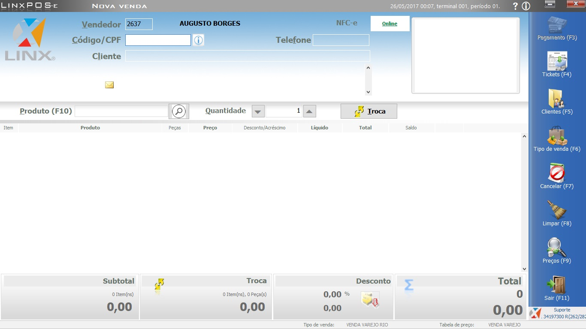
Vendas
Existem diversas formas para realização de vendas no sistema LinxPOS, aqui vamos listar as mais utilizadas.
 |
Para realizar uma venda no sistema deverão ser atendidos os pré-requisitos abaixo, somente após realizar esses procedimentos será possivel realizar uma venda. |
| Abertura de Caixa - Orientação presente na aba Caixa | |
| Abertura Fiscal - Leitura X -APENAS PARA LOJAS COM IMPRESSORA FISCAL. Orientação presente na aba Caixa |
|
Venda Simples
- Selecionar o módulo de Vendas no Menu principal
- Séra exibida a tela de segurança do sistema para validação do operador e senha. Selecionar o operador e digitar a senha.
- Na tela de vendas, sempre será exibida a lista de validação com o cadastro de todos os vendedores ativos no sistema, selecione o vendedor correspondente a venda atual.
-
Proximo passo será incluir o cliente para fidelização junto a marca Maria Filó inserindo o CPF do cliente em atendimento, caso o cliente já possua cadastro no sistema os mesmo preencherá os dados automaticamente caso ao contrario o mesmo deve ser cadastrado.
- Bipar ou digitar o produto a ser inserido na venda.
-
Após incluir o primeiro produto, Será necessário incluir o número do ticket (Boleta) na venda, digite o número do ticket.
Para as lojas que não possuem boleta o sistema ira gerar o código do ticket automaticamente. -
Selecionar a Forma de Pagamento, selecionando PAGAMENTO (F3)

OBS: Existem diversas formas de pagamento: DINHEIRO, CARTÃO DE CRÉDITO E DÉBITO POS e TEF, CHEQUES. SEMPRE que selecionarem uma forma de pagamento OBSERVAR OS DADOS A SEREM PREENCHIDOS.
No Caso da utilização do TEF (Cartão de Crédito ou Débito PDV), as informações serão preenchidas automaticamente.
- DINHEIRO (VALOR PAGO)
- CHEQUE (BANCO, CONTA, NUMERO DO CHEQUE..ETC)
- CARTÃO DE CRÉDITO OU DÉBITO POS (BANDEIRA, PARCELAS, TÍTULO e APROVAÇÃO)
OBS.: OS CARTÕES REDESHOP E MAESTRO DEVERÃO SER SELECIONADOS COMO “REDESHOP”
-
Selecionar FINALIZAR (F2)
 para concluir a Venda e ser impresso o CUPOM DO CLIENTE.
para concluir a Venda e ser impresso o CUPOM DO CLIENTE.


 |
Existem 3 formas para localizar o cadastro do cliente: CÓDIGO/CPF, NOME ou TELEFONE. |
| Segue abaixo os campos obrigatórios para realizar o cadastro do cliente: | |
| CPF | |
| NOMECOMPLETO | |
| ENDEREÇO COMPLETO (CEP, LOGRADOURO, ENDEREÇO, NÚMERO, BAIRRO, CIDADE, UF e PAÍS) | |
| TELEFONE | |
| DATA DE NASCIMENTO | |
| E-MAIL(Caso o cliente não queira informar cadastrar: informar o email da loja) | |
| Caso o cliente não queira realizar o cadastro, utilizar o CPF PADRÃO: 123.456.789-09 CLIENTE MARIA FILÓ | |

Após realizar o cadastro clique no botão Voltar (F11) para retornar a tela de venda.

|
Após inserir o primeiro produto no ticket (Boleta) , o sistema sempre apresenta a opção para digitar o Número do ticket. Caso o operador bipe duas vezes o produto, o sistema colocará o código de barras da peça no lugar do número do ticket de forma incorreta. |

 |
A Venda está finalizada apenas quando o sistema retorna para a lista de vendedoras! Qualquer outra situação a venda deve ser verificada. |
Vendas com Desconto
Existem 3 formas de o desconto ser realizado:
| Porcentagem | informa-se o valor percentual que deve ser abatido do valor do item. O sistema calcula automaticamente o desconto em reais e o valor total do produto após o desconto; |
| Desconto | informa-se em reais o valor a abater do total do item. O sistema informa o percentual de desconto que está sendo abatido e o valor total do produto após o desconto; |
| Preço final do produto | informa-se o valor total do produto após o desconto. O sistema informa o percentual de desconto oferecido no item e o valor do desconto em reais. |
Desconto no item na Tela de Consulta de Preços
- Na tela de vendas, preencha o vendedor
- Clique na opção Preços (F9).
- Insira o produto para realizar a consulta de preço.
- Clique no botão Desconto

Será apresentada a tela padrão de descontos. - Clicar no botão Adicionar à Venda para inserir o Produto já com o Desconto aplicado na tela de venda.


Clique no botão OK para confirmar o desconto.
Venda Com Tipo de Venda
A matriz Maria Filó disponobiliza algumas campanhas promocionais onde são aplicados os Descontos, segue alguns exemplos:
| Vendas | Operação de venda padrão no sistema das lojas. |
| Vendas Especial | Operação de venda com um percentual maior de desconto. |
| Vendas Aniversariante | Operação de venda com um percentual de 15% de desconto para o cliente previamente cadastrado no sistema. |
OBS.: Cada Tipo de Venda é permitido aplicar um Limite de Desconto, caso possuam alguma dúvida, entrar em contato com o Setor Comercial esclarecimentos.
- Na Tela de Vendas deverá selecionar a Vendedora
- Clicar em Tipo de Venda (F6)
- Selecionar a Operação de Venda desejada.

Trocas
Por meio do LinxPOS são possíveis dois tipos de operações de troca:
| TROCA ZERADA |
| Troca por produto de igual valor é quando o cliente deseja trocar o produto por um tamanho diferente, cor diferente ou outro produto que seja do mesmo valor. |
| TROCA COM DIFERENÇA |
| Troca por produto de valor superior é quando o cliente realiza a troca de alguma mercadoria que ultrapasse o valor do produto devolvido/trocado, gerando uma diferença financeira para o cliente pagar. |
|
É importante ressaltar que as NF-e devem ser emitidas no momento do registro da troca (quando o produto foi devolvido). A emissão e o envio das notas à SEFAZ são fundamentais para que os impostos recolhidos na venda sejam devidamente recuperados na entrada dos produtos. |
Como realizar a troca zerada
- Na Tela de Venda, selecionar o Vendedor e Inserir o Cliente.
- Clicar no botão de TROCA, onde o mesmo ficará com a Cor Vermelha.
BIPAR ou DIGITAR o produto a ser devolvido para a Loja, lembrando que deverá incluir o número do ticket sempre após inserir o primerio item na venda. - Selecionar novamente o botão de TROCA (para poder inserir o Produto que a cliente está levando).
BIPAR ou DIGITAR o produto que a cliente está levando. - A ÙNICA FORMA DE PAGAMENTO que será aceita pelo sistema no caso de uma TROCA ZERADA é DINHEIRO.
Clique no botão Pagamento (F3)
Selecionar a opção de pagamento DINHEIRO e FINALIZAR (F2) a Troca.
a Troca. - Será Exibida a Tela (Espelho da Nota Fiscal a Ser gerada), onde será necessário o Preenchimento do Campo VOLUME e clicar em OK, enviando a mesma para a SEFAZ autorizar. 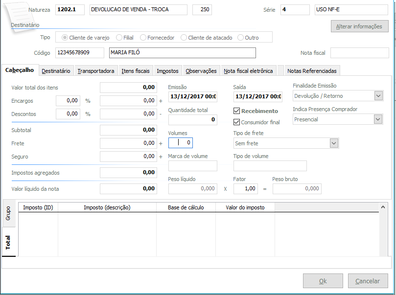
- Ao Finalizar a Venda, Será Gerado o RELATÓRIO de TROCA, sendo impresso em 2 Vias, preencher corretamente de acordo com os processos da loja.
|
Em uma situação de troca, pode-se ler ou informar primeiro o produto devolvido e depois o escolhido pelo cliente ou vice-versa. O detalhe é clicar no botão Troca antes de digitar o produto referente à troca. |
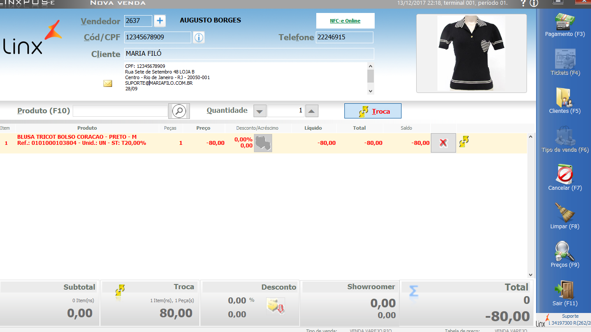
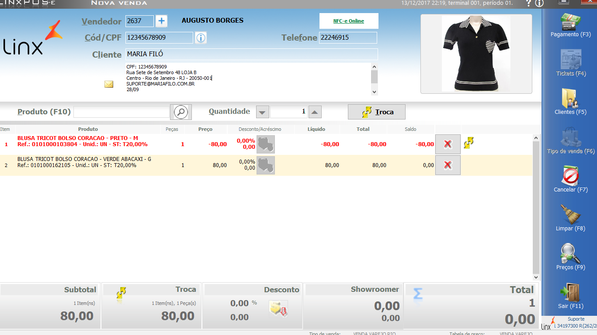
Como realizar a troca com diferença
- Na tela de Vendas do LinxPOS, informe o vendedor e o cliente que realizará a troca de mercadoria.
- Clique no botão Troca, para informar o produto que está retornando à loja. Nesta operação, os dados do produto que retornam à loja aparecerão em vermelho na tela.
Informe o produto (de valor superior) que será devolvido pelo cliente. No campo Total, localizado no rodapé da tela, será exibido um saldo a ser pago pelo cliente. - Para finalizar a troca, clique no botão Pagamento (F3)
Selecione a forma de pagamento e encerre a troca.
Deve ser emitida uma Nota Fiscal NF-e do produto devolvido para complementar a operação fiscal.
Cancelamento de Vendas
Há três principais situações em que é necessário efetuar o cancelamento:
- Quando a venda ainda não foi concluída e o cliente desistiu da compra;
- Quando o cliente decidiu por cancelar um item que já foi incluído na lista de produtos da venda;
- Quando a venda já foi concluída e o cliente desistiu da compra.
Cancelamento da venda ainda não concluída
Para efetuar o cancelamento de uma venda não concluída, realize os passos a seguir:
- Na tela de Vendas, o cliente decide não efetuar mais a compra. É necessário então cancelar a venda. Clique no botão Cancelar (F7).
- Informe o motivo do cancelamento da venda e clique em Ok.
- Informe a senha do Gerente e clique em Ok.
- A venda será cancelada, retornando para a tela de venda do LinxPOS.
Cancelamento de um item da venda
Para efetuar o cancelamento, realize os passos a seguir:
- Na tela de Vendas, Clique no botão do item a ser excluído.
- Informe a senha do gerente e clique em Ok.
- O item foi excluído da lista de itens da venda. Continue os procedimentos para conclusão da venda dos itens restantes.
- Clique no botão Pagamento (F3).
- Na lista de Formas de pagamento, selecione a opção desejada.
- Clique no botão Finalizar (F2) para concluir a venda.
Cancelamento da venda concluída
Para efetuar o cancelamento de uma venda concluída, realize os passos destacados seguir:
- Na tela de vendas, clique no botão Tickets (F4) para pesquisar a venda efetuada e realizar o respectivo cancelamento.
- Selecione o ticket referente a venda e clique no botão Ok. Os dados da venda são exibidos na tela.
- Clique no botão Cancelar (F7) e confirme o cancelamento na tela apresentada.
- Informe o motivo do cancelamento da venda e clique em Ok.
- Informe a senha do gerente e clique em Ok.
- A venda será cancelada, retornando para a tela de venda do LinxPOS.
Caixa
Abertura de Caixa no LinxPOS
- Selecionar CAIXA no menu principal
- Para acessar o módulo será necessário informar o OPERADOR e a SENHA para validar o acesso.
- Selecionar o móduko GERENCIAMENTO DE CAIXA
- Será exibida a tela de GERENCIAMENTO DE CAIXA onde será informado o STATUS ATUAL: CAIXA FECHADO
- Após esse processo clique em SAIR (F11)
- Efetuar a impressão da LEITURA X para realizar esse processo selecione o módulo GERENCIAMENTO FISCAL.
- Na tela GERENCIAMENTO FISCAL, deverá clicar no botão EFETUAR LEITURA X iniciando a abertura da impressora fiscal para iniciar o periodo de vendas do dia.
- Selecionar INICIO para sair da tela de gerenciamento fiscal. 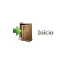
- Selecionar Sair(F11) para retornar ao menu principal.


Clique no botão INICIAR para iniciar o periodo e alterar o STATUS ATUAL para CAIXA ABERTO


|
Para as lojas que utilizam impressoras fiscais é necessário realizar o processo abaixo. Lojas que utilizam NFC-e ou CF-SAT, não devem realizar essa etapa, podem seguir para a tela de vendas. |

Sistema deve apresentar a mensagem Leitura X concluída
Conferência de Caixa
Na tela de Gerenciamento do caixa são realizadas diversas consultas e conferências do caixa, além da impressão dos resumos de vendas da loja.
- Somente será possível realizar a conferência do dia, caso deseje verificar por período, acessar as telas do LinxPOS Manager.
-
Configurados os filtros, clique no botão PESQUISAR (F3) e consulte as abas disponíveis na área central da tela.
Saldo do caixa Apresenta os valores finais das modalidades de pagamento e movimentações de caixa. Resumo de vendas Apresenta o valor bruto, descontos e valores líquidos das vendas. Movimentação de Caixa Apresenta os lançamentos de caixa. O botão Detalhes apresenta o registro de caixa com todas as informações cadastradas no momento do lançamento. Tipos de Pagamento Nesta aba é possível conferir os valores do caixa com o sistema. Se necessário, pode ser acionado o botão Detalhes, para conferência lançamento a lançamento. Notas Fiscais Apresenta os detalhes das Notas Fiscais emitidas, como natureza, código de operação, impostos agregados e totais por nota. Redução Z Apresenta um resumo do relatório emitido, totalizando por venda líquida, valor total e valor contábil. Relatórios Nesta aba é possível emitir os relatórios Comparativo com a Redução Z e Resumos do Caixa.
O Resumo de Caixa exibe informações do movimento da loja, totalizando valores por Tipo de Venda, Formas de Pagamento, Tipo de Pagamento, Vendedores e outras informações úteis para o gerenciamento da loja.
Esta impressão pode ser configurada, trazendo informações selecionadas na tela. Este procedimento é feito por meio dos filtros disponíveis: Lista cheques e cartões, Inventário, Vendedores, Lista cupons fiscais, etc.
Os resultados poderão ser visualizados de maneiras diferentes.
Janela de Visualização (Preview): o resultado será exibido na tela.
Impressora: realizará a impressão em uma impressora convencional.
ECF: imprimirá o relatório gerencial na impressora fiscal. - Clique no botão Sair para voltar ao menu principal.
| PERÍODO |
|
Todos os períodos: esta opção apresenta nas abas de consulta informações de todos os períodos do caixa. O período atual é apresentado na parte superior da tela. Este tipo de consulta é utulizada para as empresas que trabalham com mais de um turno nas lojas, como por exemplo: um operador de caixa pela manhã, outro à tarde e outro a noite. Somente o período: esta opção apresenta nas abas de consulta informações apenas do períodos aberto do caixa. |
| OPERADOR |
|
Todos os operadores: esta opção apresenta nas abas de consulta informações referentes a todos os operadores do período selecionado. Somente o operador: apresenta nas abas de consulta informações referentes ao operador selecionado. |
Fechamento de Caixa
O fechamento do caixa encerra as atividades do dia, no período atual do terminal em operação. Este procedimento deve ser feito com atenção, pois não pode ser retornado ou cancelado.
Para efetuar o fechamento do caixa, realize os passos a seguir:
- Selecionar CAIXA no menu principal
- Para acessar o módulo será necessário informar o OPERADOR e a SENHA para validar o acesso.
- Selecionar o módulo GERENCIAMENTO DE CAIXA
- Será exibida a tela de GERENCIAMENTO DE CAIXA onde será informado o STATUS ATUAL: CAIXA ABERTO
Clique no botão FINALIZAR para encerrar o periodo e alterar o STATUS ATUAL para CAIXA FECHADO - Após esse processo clique em SAIR (F11)
- Efetuar a impressão da REDUÇÃO Z para realizar esse processo selecione o módulo GERENCIAMENTO FISCAL.
- Na tela GERENCIAMENTO FISCAL, deverá clicar no botão EFETUAR REDUÇÃO Z encerrando a impressora fiscal fechando o período de vendas do dia.
- Selecionar INICIO para sair da tela de gerenciamento fiscal.
- Selecionar Sair(F11) para retornar ao menu principal.
|
Para as lojas que utilizam impressoras fiscais é necessário realizar o processo abaixo. Lojas que utilizam NFC-e ou CF-SAT, não devem realizar essa etapa, pode fechar o LinxPOS, o sistema está encerrado. |
No final do processo o sistema apresentará a mensagem: Redução Z efetuada com sucesso
|
Após uma Redução Z, não será mais possível registrar vendas no dia. |
Consultas
Nesta opção é possível consultar todas as movimentações de vendas, estoques e preços praticados.
-
No Menu principal do LinxPOS, clique na opção: Consultas
-
Clique em cada uma das opções na figura a seguir para visualizar suas funcionalidades.

-
Efetuadas as consultas, clique no botão Voltar.
O sistema retorna ao menu principal.
Clique no botão Sair.
Será apresentada a tela para seleção das consultas disponíveis.
Consulta de Produtos
A consulta de produtos apresenta todos os detalhes dos produtos de acordo com as opções de filtro disponíveis, como: referência, descrição e código de barras.
Para acessar a opção de consulta de produtos:
- No menu principal do LinxPOS, clique na opção Será apresentada a tela para seleção das consultas disponíveis.
-
Clique no botão
Será aberta a tela de consulta.
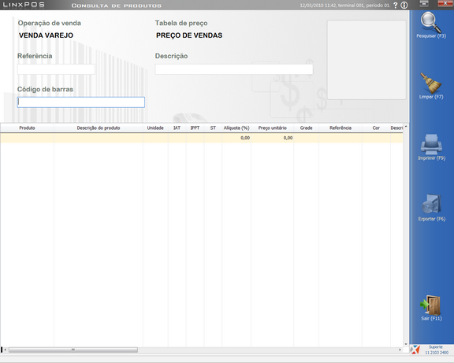
- Será apresentada a tela com os dados dos produtos pesquisado. 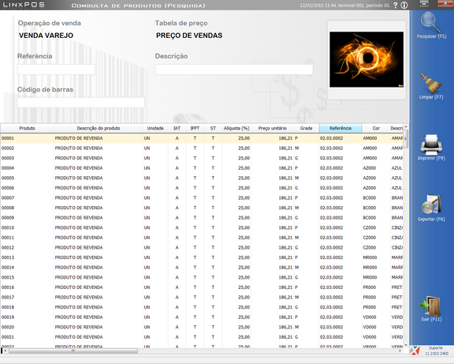
-
Concluída a consulta, clique no botão Sair.
O sistema retorna ao menu principal.
Clique no botão Pesquisar
Consulta de Vendas
Para a gestão das lojas, a consulta de vendas possibilita, de forma ágil, verificar os tickets emitidos, as vendas por vendedor e cliente e as formas de pagamento praticadas.
Esta consulta apresenta todos os detalhes das vendas realizadas, de acordo com as opções de filtro disponíveis, como: vendedor, percentual e valor de comissão, descrição dos produtos vendidos por cor, quantidade e tamanho, formas de pagamento, tabelas de preço, descontos, trocas, entre outros.
O sistema permite ainda a emissão da Nota Fiscal de Venda, Troca ou Cancelamento e o envio da nota fiscal caso não seja enviada para a SEFAZ no momento da venda.
Para consultar as vendas:
-
No menu principal da opção Consultas, clique no botão:
Será aberta a tela de segurança do sistema para seleção do operador e senha. - Será aberta a tela de consulta. 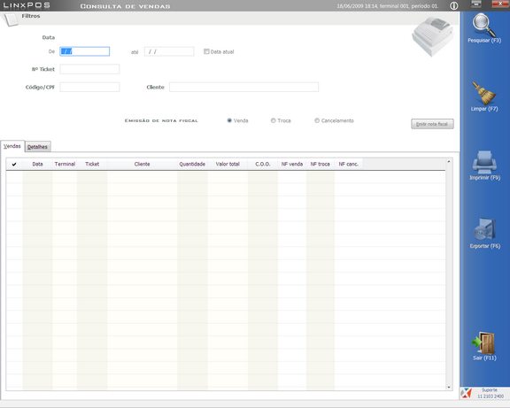
-
Insira o número do ticket ou do CPF do cliente e clique no botão Pesquisar, localizado na área direita da tela.
Os dados serão apresentados.
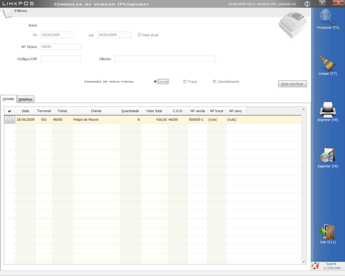 - Na aba Vendas são apresentados os dados de forma sintética, como a data, terminal, ticket, C.O.O. e Notas Fiscais.
- Na aba Detalhes são apresentados os detalhes da venda, divididos em pastas:
- Para enviar a Nota Fiscal Eletrônica de venda, consulte os dados das vendas. 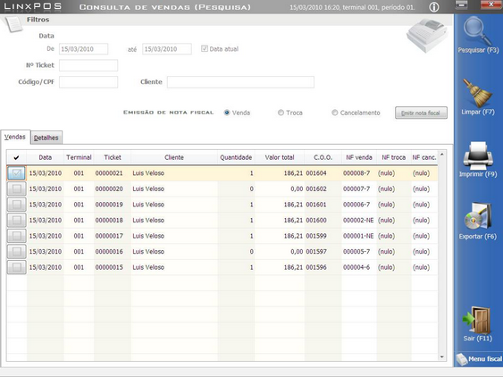
- Verifique se todos os dados da nota estão preenchidos corretamente, em seguida clique no botão OK. 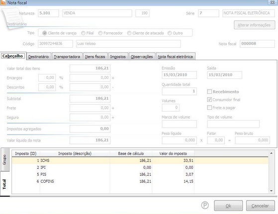
-
Ao clicar em Sim, o sistema transmitirá os dados da NFe para a SEFAZ e importará os dados em formato arquivo ret para o email do destinatário referente as operações comerciais.
Concluída a consulta, clique no botão Sair.
O sistema retorna ao menu principal.
Selecione o operador e informe a senha.
|
Clique no botão OK para confirmar ou no botão Alterar, para cadastrar uma nova senha. |
| Geral | Apresenta: forma de pagamento, tabela de preços praticada, operador do caixa, gerente da loja e do período, quantidade, valor bruto, valor líquido, etc. |
| Produtos | Apresenta: Detalhes do produto como cor, descrição da cor, tamanho, quantidade, preço líquido e descontos. |
| Trocas | Apresenta os detalhes da troca, quando houver. |
| Parcelas | Apresenta os tipos de pagamento, suas parcelas (dependendo da condição praticada), vencimento, número do título e valor. |
| Vendedores | Apresenta o vendedor, valor da comissão e alíquota. |
Selecione a venda desejada e clique no botão Emitir Nota Fiscal.
Será apresentada a seguinte mensagem.
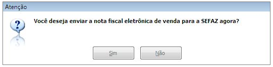Consulta de Estoques
Os estoques são atualizados mediante as operações de entradas e saídas (vendas, trocas e devoluções).
O Linx POS possibilita consultar a posição do estoque das lojas com a apresentação de cor e grade. Para facilitar a consulta, é possível efetuá-la pela referência ou código de barras, e, se necessário, filtrar uma loja.
Outra possibilidade é a utilização do recurso % (percentual) para obter o estoque de vários produtos na mesma consulta.
Exemplo:
| Referencia: 20% | apresenta o estoque de todos os produtos iniciados pelo número 20. |
| Descrição: bermuda% | apresenta o estoque de todos os produtos iniciados pela palavra bermuda. |
-
No menu principal da opção Consultas, clique no botão
Será aberta a tela de consulta.
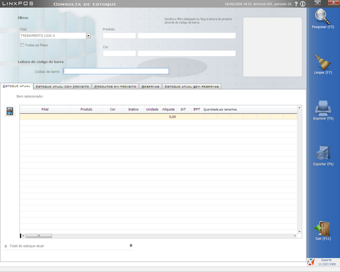
- Será apresentada a tela com os dados do produto pesquisado. 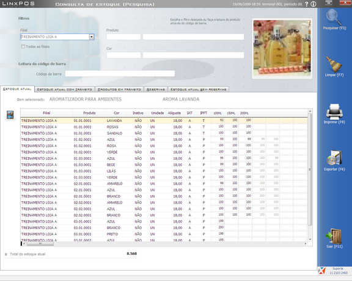
-
Concluída a consulta, clique no botão Sair.
O sistema retorna ao menu principal.
Clique no botão Pesquisar.
| Aba Estoque Atual | Apresenta os produtos e seus respectivos valores em estoque, bem como os valores totais do estoque atual. |
| Aba Estoque Atual com Trânsito | Quando tiver estoque em trânsito, serão apresentados os valores do estoque atual mais o estoque em trânsito. |
| Aba Produtos em Trânsito | Apresenta o estoque da loja (estoque físico) mais as transferências (trânsito). |
| Aba Reservas | Apresenta os produtos que foram colocados em reserva. |
| Aba Estoque Atual sem Reservas | Apresenta a posição do estoque, abatendo as peças que encontram-se em reservas em aberto. |
Consulta de Preços
A consulta de preços é uma operação que pode ser requisitada, a qualquer momento, por um cliente.
Nesta opção podem ser consultados os preços dos produtos por referência ou código de barras. É apresentada toda a referência de preços de acordo com a grade do produto.
-
No menu principal da opção Consultas, clique no botão

É apresentada a tela de consulta.
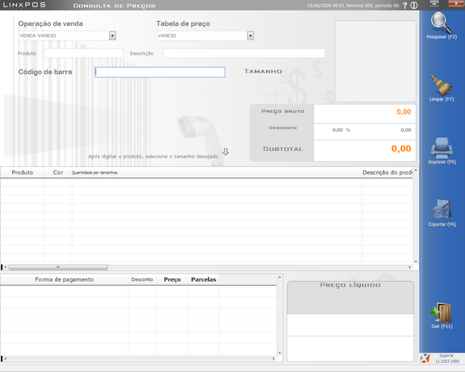
- Será apresentada a tela com os dados do produto pesquisado. 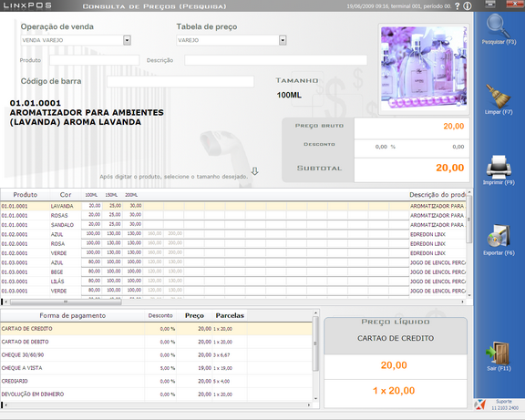
-
São apresentados o preço bruto e o preço líquido do produto (considerando os descontos concedidos na forma de pagamento). O valor das parcelas também é apresentado na tela.
Concluída a consulta, clique no botão Sair.
O sistema retorna ao menu principal.
Selecione os filtros desejados para consultas: Operação de Venda, Tabela de Preço, Produto ou Código de Barras.
Em seguida, clique no botão Pesquisar.
Configuração de Impressão
Configuração das opções de impressão
- No menu de Configurações, clique na opção.